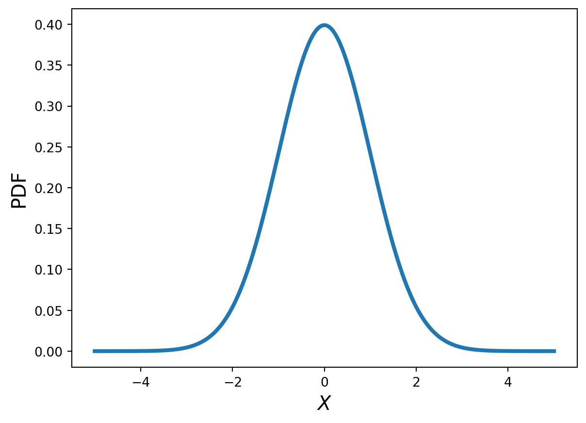
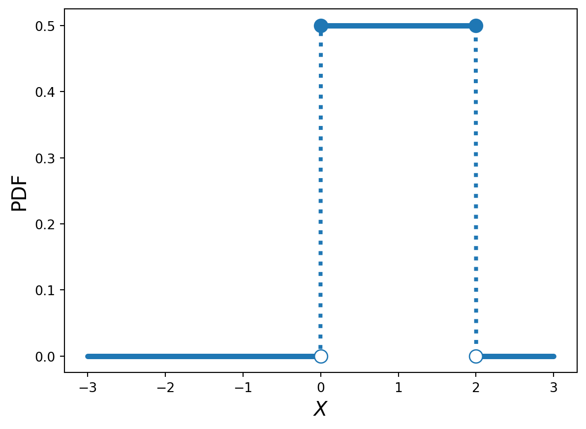
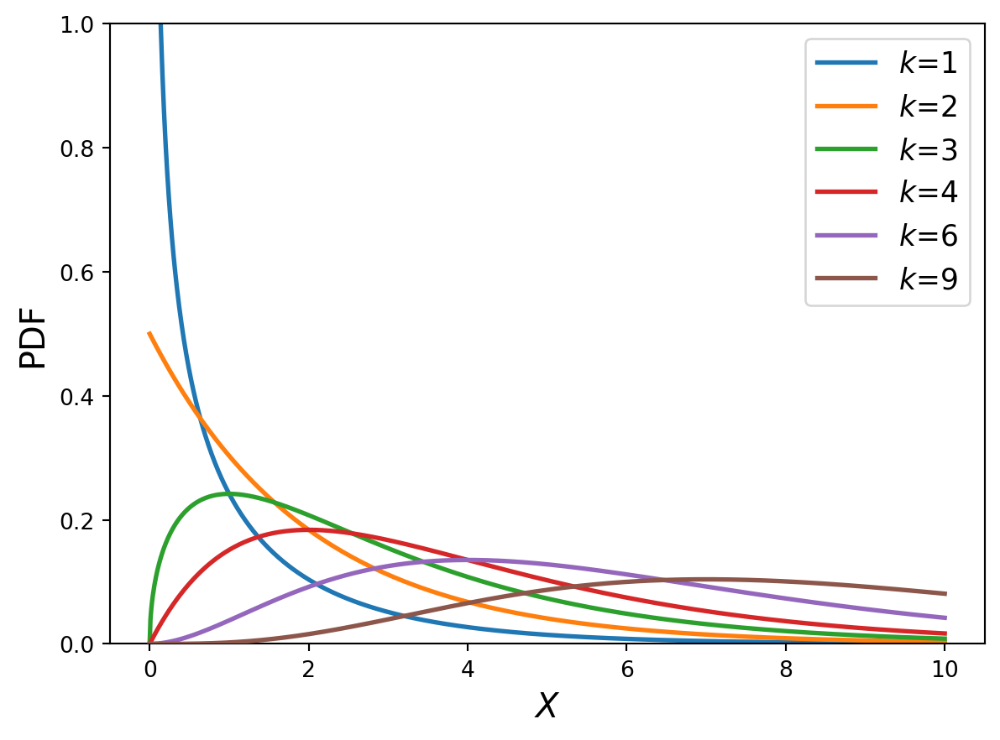
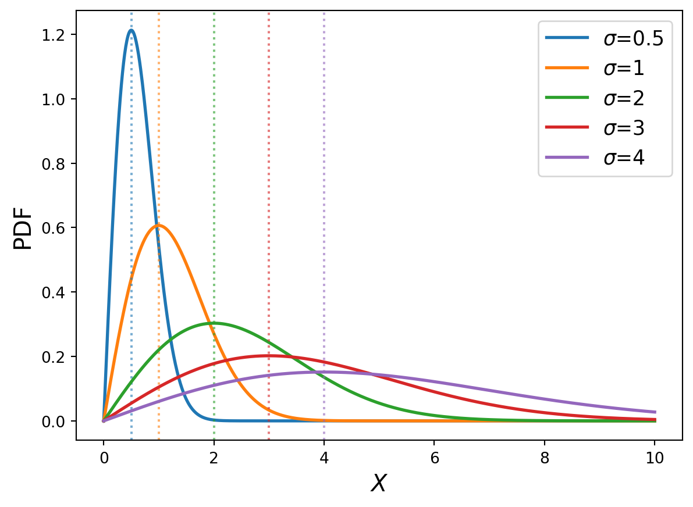
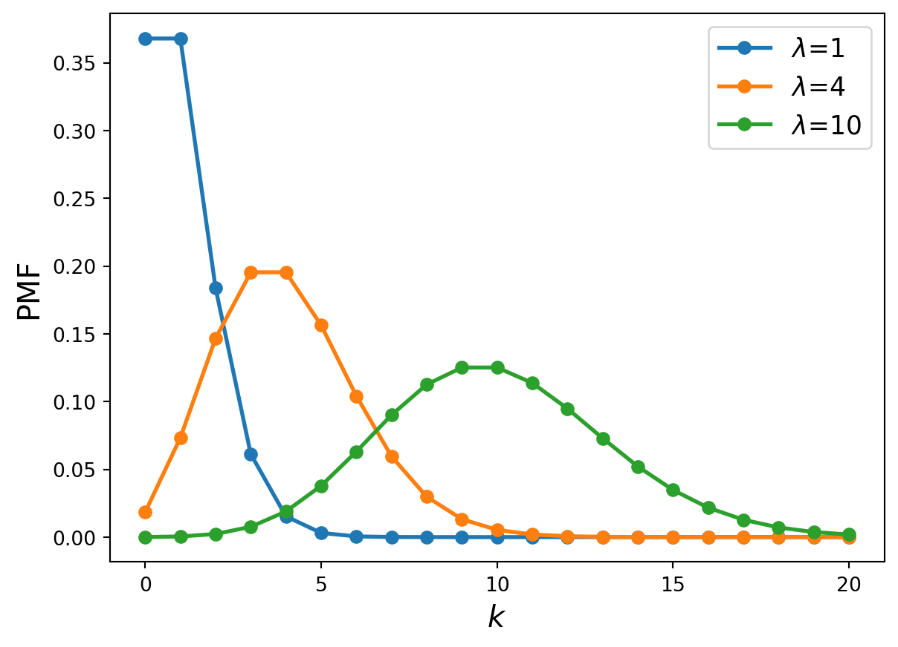

여러 확률변수가 가질수있는 확률 밀도 함수 PDF (Probability density function)의 식과 모양을 알아볼 예정이다.(Li 1999)
Probability distribution
Gaussian distribution
Gaussian distribution는 독일의 수학자 카를 프리드리히 가우스(Carl Friedrich Gauss)에 의해 소개되었으며, 정규 분포(Normal Distribution)라고도 불린다. 이 분포는 자연 현상에서 관측되는 많은 연속적인 데이터에 적합하며, 오차나 잡음 등의 확률적 변동을 모델링하는 데 사용될 수 있다. 또한 중심극한정리에 의해, 독립적인 확률 변수들의 합은 Gaussian 분포로 수렴하게 된다고 한다.
확률 변수 표기법은 다음과 같다: \[
X\sim N(\mu,\sigma^2).
\]
또한 해당 변수의 PDF (Probability density function)은 다음과 같다: \[
f(x) = \frac{1}{\sqrt{2\pi\sigma^2}} \exp\left( -\frac{(x - \mu)^2}{2\sigma^2} \right)
\]
이를 그래프로 그린다면 다음과 같이 나온다.
Code
import numpy as npimport matplotlib.pyplot as pltdef N(x,mu,sigma):return1/np.sqrt(2*np.pi*sigma**2)*np.exp(-(x-mu)**2/(2*sigma**2))x = np.linspace(-5,5,1000)plt.ylabel('PDF',fontsize=15)plt.plot(x,N(x,0,1),lw=3)plt.xlabel('$X$',fontsize=15)plt.show()

Figure 1: Gaussian 분포의 확률 밀도 함수 그래프 \(\mu=0,\sigma=1\)
Uniform distribution
Uniform 분포는 모든 값이 동일한 확률로 발생하는 가장 기본적인 분포 중 하나이다. 이는 균등 분포라고도 불리며, 주로 난수 생성이나 random sampling에서 사용된다.
확률 변수 표기법은 다음과 같다: \[
X\sim U(a,b),
\] 여기서 \(a,b\)는 각각 uniform distribution의 하한과 상한을 의미하며, PDF는 다음과 같이 나타난다: \[
f(x) = \begin{cases}
\frac{1}{b - a}, & a \leq x \leq b \\
0, & \text{otherwise}
\end{cases}
\] 헤당 PDF를 그려보면 다음과 같이 나온다.
Code
import numpy as npimport matplotlib.pyplot as pltdef U(x,a,b): p =1/(b-a)return np.where((x>=a)&(x<=b),p,0)x = np.linspace(-3,3,1000)plt.ylabel('PDF',fontsize=15)plt.plot(x,U(x,0,2),'.:',lw=3)plt.xlabel('$X$',fontsize=15)plt.scatter([0,2],[0,0],facecolor='white',edgecolor='tab:blue',s=100,zorder=3)plt.scatter([0,2],[U(0,0,2),U(2,0,2)],s=100)plt.show()

Figure 2: Uniform 분포의 확률 밀도 함수 그래프 \(a=0,b=2\)
\(\chi^2\) (Kai-square) distirbution
카이제곱 분포는 통계학자 카를 피어슨(Karl Pearson)에 의해 도입되었으며, 표준 정규 분포를 따르는 독립적인 확률 변수들의 제곱합으로부터 유도 된다. 주로 적합도 검정, 독립성 검정 등 통계적 가설 검정에 사용된다고 한다.
확률 변수의 표기법은 다음과 같다: \[
X\sim \chi^2_k
\] 카이제곱 분포는 \(k\)개의 표준 정규 분포(\(N(0,1)\))를 따르는 확률 변수들의 제곱합으로 정의 되며, 여기서 \(k\)는 자유도라고도 불린다. 카이제곱 분포와 정규분포의 확률변수의 관계를 나타내면 다음과 같다: \[
X=\sum_{i=1}^{k}Z_i^2 \quad (\text{where } Z_i \sim N(0,1)).
\]
또한 카이제곱 분포의 PDF는 다음과 같이 나타난다: \[
f(x; k) = \frac{1}{2^{k/2}\Gamma(k/2)} x^{(k/2)-1} e^{-x/2},
\] 여기서 \(\Gamma\)는 감마함수를 나타낸다.
각각의 자유도마다 PDF를 나타내면 다음 그래프와 같다
Code
import numpy as npimport matplotlib.pyplot as pltfrom scipy.special import gammadef Kai2(x,k):return1/(2**(k/2)*gamma(k/2))*(x**(k/2-1)*np.exp(-x/2))x = np.linspace(0,10,1000)plt.ylabel('PDF',fontsize=15)for k in [1,2,3,4,6,9]: plt.plot(x,Kai2(x,k),lw=2,label=f'$k$={k}',zorder=k)plt.legend(fontsize=13)plt.ylim(0,1)plt.xlabel('$X$',fontsize=15)plt.show()
/var/folders/lj/v2s5sd8n1cv2xdh0yw2kf0x00000gn/T/ipykernel_38402/2007568854.py:6: RuntimeWarning: divide by zero encountered in power
return 1/(2**(k/2)*gamma(k/2))*(x**(k/2-1)*np.exp(-x/2))

Figure 3: Kai-square 분포의 확률 밀도 함수 그래프 \(k=1,2,3,4,6,9\)
Reighley distribution
Rayleigh 분포는 물리학자 존 윌리엄 스트럿 레일리(John William Strutt, 3rd Baron Rayleigh)에 의해 소개되었다. 이는 이차원에서의 진폭이나 거리 등의 분포를 모델링하며, 신호 처리, 무선 통신, 기상학 등에서 신호 강도나 파동의 진폭을 표현하는 데 사용된다고 한다.
Rayleigh분포는 두 개의 독립적이며, 서로 같은 분산을 가지고 평균이 0인 Gaussian 분포를 따르는 확률 변수들의 제곱근 합으로 얻어진다. 즉, \[
R=\sqrt{X^2+Y^2}
\] 이며, 여기서 \(X,Y\sim N(0,\sigma^2)\)이다. 이는 2차원 공간에서의 벡터의 크기를 나타내며, 진폭 혹은 에너지와 같은 물리적 의미를 두고 해석 할 수 있다.
Reighley 분포의 PDF를 나타낸다면 다음과 같이 나타낼 수 있다(Papoulis 1965): \[
f(x; \sigma) = \frac{x}{\sigma^2} e^{-\frac{x^2}{2\sigma^2}}
\]
또한 해당 PDF를 다른 분산에 대해서 그리면 다음과 같이 나타낼 수 있다.
Code
import numpy as npimport matplotlib.pyplot as pltdef Reighley(x,sigma):return x/sigma**2*np.exp(-(x)**2/(2*sigma**2))x = np.linspace(0,10,1000)plt.ylabel('PDF',fontsize=15)for sigma in [0.5,1,2,3,4]: l,=plt.plot(x,Reighley(x,sigma),lw=2,label=rf'$\sigma$={sigma}',zorder=sigma) plt.axvline(sigma,ls=':',alpha=0.6,color=l.get_color())plt.legend(fontsize=13)# plt.ylim(0,1)plt.xlabel('$X$',fontsize=15)plt.show()

Figure 4: Reighley 분포의 확률 밀도 함수 그래프 \(\sigma=0.5,1,2,3,4\)
Figure 4 에서 그려진 세로선은 \(\sigma\)를 나타내는 선으로 \(f(x,\sigma)\)에서 최댓값이 나타나는 부분과 일치하는 것을 확인 해 볼 수 있다.
Poisson distribution
Poisson 분포는 프랑스의 수학자 시메옹 드니 푸아송(Siméon Denis Poisson)에 의해 발견되었다. 이는 단위 시간이나 공간에서 발생하는 희소한 사건의 발생 횟수를 모델링하며, 통신 이론, 신뢰성 공학, 대기과학 등에서 사용될 수 있다.
Poisson 분포는 이항 분포와도 관련이 있는데, 이항 분포에서 시행 횟수 \(n\)이 매우 크고 성공 확률 \(p\)가 매우 작을 때 (\(n\to \infty,p\to 0\) 이며, 기댓값은 \(np=\lambda\)), 이항 분포는 Poisson 분포로 근사되게 된다. 이 때의 식은 다음과 같다: \[
\lim_{n \to \infty} \binom{n}{k} p^k (1-p)^{n-k} = \frac{\lambda^k e^{-\lambda}}{k!}
\] 여기서 \(k\)는 사건이 발생한 횟수를 의미하게 된다.
사건이 일어나는 횟수를 나타내기 때문에, 확률 변수는 독립적으로 나타내며, 이떄의 확률 질량 함수 PMF(probability mass function)는 다음과 같이 낱타낸다: \[
f(x;k)= \frac{\lambda^k e^{-\lambda}}{k!}
\]
Possion 분포의 기댓값 \(\lambda\)에 따른 PMF 그래프를 나타내면 다음과 같이 나타낼 수 있다.
Code
import numpy as npimport mathimport matplotlib.pyplot as pltdef Possion(k: int,lamb: float):return lamb**k*np.exp(-lamb)/math.factorial(k)Possion = np.vectorize(Possion)ks = np.arange(0,21,1,dtype=int)plt.ylabel('PMF',fontsize=15)for lamb in [1,4,10]: l,=plt.plot(ks,Possion(ks,lamb),'o-',lw=2,label=rf'$\lambda$={lamb}',zorder=lamb)plt.legend(fontsize=13)plt.xticks([0,5,10,15,20])plt.xlabel('$k$',fontsize=15)plt.show()

Figure 5: Possion 분포의 확률 질량 함수 그래프 \(\lambda=1,4,10\)
References
Li, X Rong. 1999. Probability, Random Signals, and Statistics. CRC press.
Papoulis, Athanasios. 1965. Random Variables and Stochastic Processes. McGraw Hill.